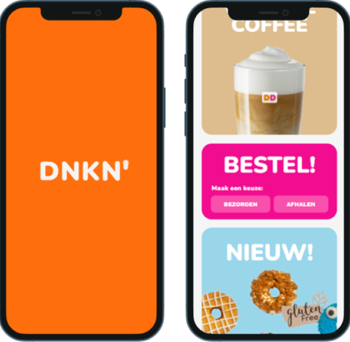

3 weeks
september 2024 - october 2024
Front-end developer
VS studio code
(HTML / CSS / Javascript)
For this class i had to remake a website of my choice. In this class we only had to make 2 pages and we about learned about accessability, responsiveness and css animations.
We could choose between making our website responsive or adding animations and i chose to focus on css animations.

These are some of the animations I ended up making
I created the loading screen with css animation and used animation delay to have the letters appear smoothly one after the other.
For the buttons to make them look like it got bit I used ::before and ::after this kept the website looking visually interesting to look at.
For the menu I did a few different things such as transform to make menu a cross then when the menu gets clicked the navigation will appear from under and then when it gets clicked again it'll disappear one by one.